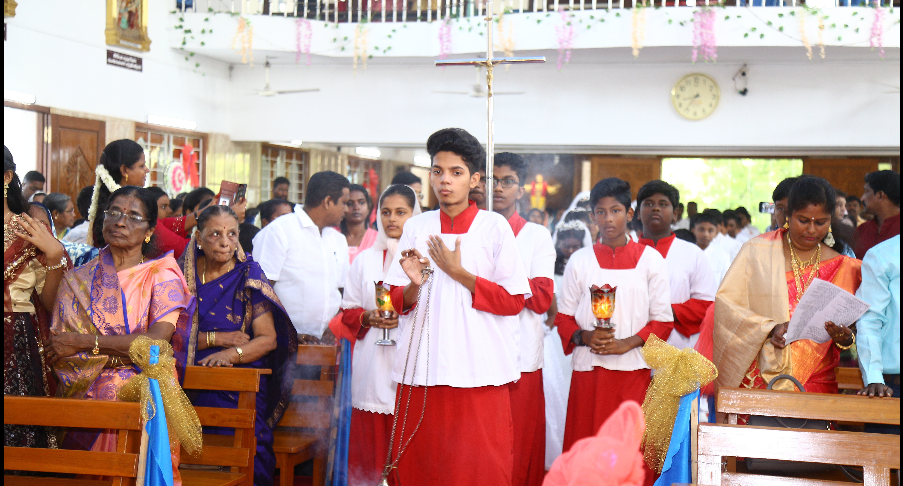
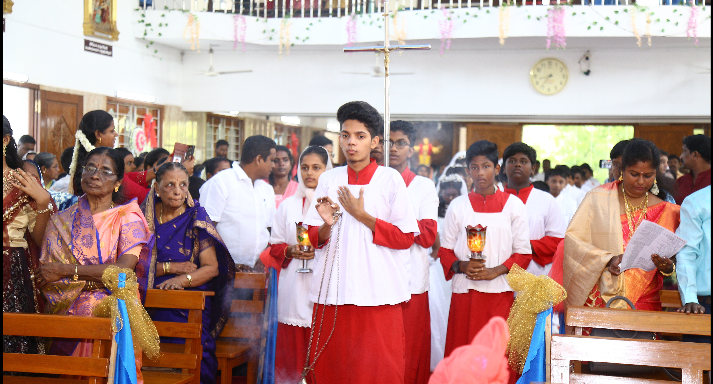

In 1966, a small Christian community was living in Lakshmipuram, which was then part of the Perambur Lourdes Shrine Parish. The community desired to establish a small chapel. Over time, more families settled in Lakshmipuram, and they worked together to receive pastoral guidance and sacraments from the Church.
With the dedicated efforts of the then Perambur Parish Priest, Rev. Fr. McFerran SDB, and the blessings of Archbishop Arulappa, 9 cents of vacant land were purchased on March 27, 1967, on Vivekanandar Street, Lakshmipuram. A thatched-roof chapel was built, where night school was conducted for underprivileged students. However, due to unforeseen circumstances, the chapel could not be maintained.
During this period, Holy Mass was celebrated in the homes of Christian families by Rev. Fr. A. M. Chinnappa SDB, the then Assistant Parish Priest of Perambur. The local people, though economically weak, contributed towards the church activities. Later, in 1970, another plot of land (the present church location) was purchased, and Rev. Fr. Antony Hickman built a small thatched-roof chapel.
More families continued to settle in the area, and by 1975, Lakshmipuram, which was initially a sub-parish of Perambur, became part of the newly established Peravallur Resurrection Church in 1976. The first Parish Priest of Peravallur was Rev. Fr. Lazar SDB. In 1979, Rev. Fr. Mathew Orathal purchased additional land for the church.
In 1984, Rev. Fr. N. A. Joseph SDB replaced the old roof with a new structure and helped local children pursue higher education and vocational training.
During Rev. Fr. Pascal's tenure, a boundary wall was constructed around the church. At this time, there were 60 Catholic families in the parish. Rev. Fr. Paul Moussariyet introduced the concept of Anbiyams (Small Christian Communities) in 1999, constructed the Parish Priest's residence, and acquired more land. The first Anbiyam anniversary was celebrated in 2001, and efforts began to elevate the church to a full-fledged parish. The parish boundaries were officially defined.
With Rev. Fr. Paul Moussariyet's persistent efforts, on June 8, 2003, a Holy Mass was celebrated by Auxiliary Bishop Lawrence Pius, in the presence of Perambur Parish Priest Bishop Soundararajan and Fr. Paul Moussariyet, officially declaring Arokia Matha Church as an independent parish.
The first Parish Priest of the newly established parish was Rev. Fr. Gnanaprakasham.
On September 8, 2008, Archbishop A. M. Chinnappa SDB laid the foundation stone for the new church building. The construction was carried out in multiple phases, with the first and second floors completed over time. After serving for ten years, Fr. Gnanaprakasham was transferred before the church construction was fully completed. Rev. Fr. Clement Bala took over, and with the unwavering support of the parishioners, successfully completed the church construction. On August 28, 2014, the church was consecrated by Archbishop Antony Sami.